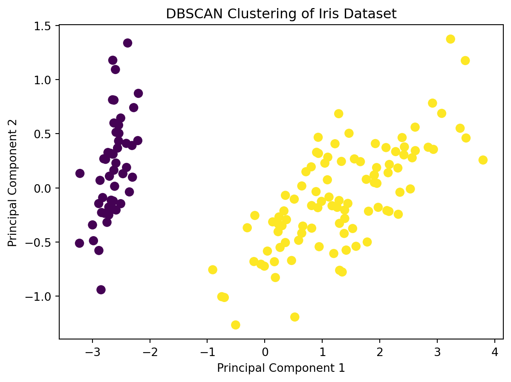

# Import necessary libraries
import numpy as np
import matplotlib.pyplot as plt
from sklearn.cluster import DBSCAN
from sklearn.datasets import load_iris
from sklearn.decomposition import PCA
# Load the Iris dataset
iris = load_iris()
X = iris.data
y = iris.targetClustering in Machine Learning:
In the context of machine learning, clustering is a technique employed to group similar data points together based on specific features or characteristics. The underlying goal is to uncover inherent structures within the data, identifying patterns that might not be immediately apparent. The fundamental idea is that items within the same group, known as a cluster, exhibit greater similarity to one another compared to those in different clusters. Clustering is particularly valuable in situations where the inherent organization or relationships within the data are not known in advance.
Purpose of Clustering: Grouping Similar Data Points Together:
The primary purpose of clustering is to reveal patterns, relationships, or hidden structures within a dataset by grouping together data points that share common characteristics. This grouping is driven by the objective of making the data more manageable and interpretable. Key purposes of clustering include:
Customer Segmentation: Identifying groups of customers with similar purchasing behavior, preferences, or demographics to tailor marketing strategies.
Anomaly Detection: Detecting outliers or anomalies in the data by identifying data points that do not conform to the general patterns observed in the clusters.
Pattern Recognition: Uncovering patterns or trends that might not be apparent through traditional analysis methods.
Clustering helps in simplifying complex datasets, making them more amenable to analysis and interpretation. It serves as a valuable tool for exploratory data analysis, enabling researchers and analysts to gain insights into the inherent structure of the data.
Overview of Common Clustering Algorithms:
There are various clustering algorithms, each with its own approach and characteristics. Here’s a brief overview of some common clustering algorithms:
K-Means Clustering: Divides data into a predefined number of clusters (K) by minimizing the variance within each cluster.
Hierarchical Clustering: Forms a hierarchy of clusters by either iteratively merging smaller clusters into larger ones (agglomerative) or iteratively splitting larger clusters into smaller ones (divisive).
DBSCAN (Density-Based Spatial Clustering of Applications with Noise): Identifies clusters based on the density of data points, allowing for the discovery of clusters with irregular shapes and the handling of noise.
The choice of clustering algorithm depends on the nature of the data and the specific objectives of the analysis. Different algorithms may be more suitable for different types of datasets or desired clustering outcomes.
Introduction to DBSCAN as a Density-Based Clustering Algorithm:
Density-Based Spatial Clustering of Applications with Noise (DBSCAN) is a powerful clustering algorithm that groups data points based on their density in the feature space. Unlike traditional clustering methods, DBSCAN doesn’t assume a predetermined number of clusters or their shapes. Instead, it identifies dense regions in the data, forming clusters of varying shapes while also recognizing outliers as noise.
DBSCAN is particularly effective in scenarios where clusters may have irregular shapes, sizes, or densities. It offers a flexible and dynamic approach to clustering that adapts well to the inherent structure of the data.
How DBSCAN Differs from Other Clustering Algorithms (e.g., K-Means):
- Cluster Shape Assumption:
- K-Means: Assumes that clusters are spherical and equally sized.
- DBSCAN: Does not make assumptions about cluster shapes, making it suitable for identifying clusters of arbitrary shapes.
- Number of Clusters:
- K-Means: Requires specifying the number of clusters (K) beforehand.
- DBSCAN: Automatically determines the number of clusters based on the density of data points.
- Handling Noise:
- K-Means: Sensitive to outliers and noise, as it tries to assign every point to a cluster.
- DBSCAN: Robust to noise and can distinguish noise from actual clusters, labeling outliers as noise.
- Cluster Connectivity:
- K-Means: Assumes clusters are isotropic and equally distributed.
- DBSCAN: Identifies clusters of arbitrary shapes and can handle clusters with different densities.
Strengths and Weaknesses of DBSCAN:
Strengths: 1. Flexibility in Cluster Shape: - DBSCAN can identify clusters with complex shapes, making it suitable for a wide range of real-world datasets.
- Automatic Detection of Number of Clusters:
- Unlike K-Means, DBSCAN does not require specifying the number of clusters beforehand. It dynamically adapts to the density of the data.
- Robust to Noise:
- DBSCAN distinguishes noise from actual clusters, making it robust in the presence of outliers.
- Handling Clusters of Different Densities:
- DBSCAN can identify clusters with varying densities, making it useful in situations where clusters may have different concentrations of data points.
Weaknesses: 1. Sensitivity to Parameters: - DBSCAN’s performance is sensitive to the choice of parameters, particularly the epsilon (radius) and MinPoints.
- Difficulty with Varying Density:
- It may struggle in scenarios where clusters have widely varying densities, and choosing appropriate parameters becomes challenging.
- Difficulty with High-Dimensional Data:
- DBSCAN’s effectiveness can diminish in high-dimensional spaces due to the curse of dimensionality.
Understanding the strengths and weaknesses of DBSCAN is crucial for its successful application in clustering tasks. Proper parameter tuning and consideration of the characteristics of the dataset are essential for achieving optimal results with DBSCAN.
Example Code:
# Scatter plot of Sepal Length vs Sepal Width
plt.figure(figsize=(12, 5))
plt.subplot(1,2,1)
plt.scatter(X[:, 0], X[:, 1], c=y, cmap='viridis', s=50, edgecolors='k')
plt.title('Iris Dataset - Sepal Length vs Sepal Width')
plt.xlabel('Sepal Length (cm)')
plt.ylabel('Sepal Width (cm)')
plt.subplot(1,2,2)
# Scatter plot of Petal Length vs Petal Width
plt.scatter(X[:, 2], X[:, 3], c=y, cmap='viridis', s=50, edgecolors='k')
plt.title('Iris Dataset - Petal Length vs Petal Width')
plt.xlabel('Petal Length (cm)')
plt.ylabel('Petal Width (cm)')
plt.show()# Reduce data dimensionality for visualization
pca = PCA(n_components=2)
X_pca = pca.fit_transform(X)
# Apply DBSCAN
dbscan = DBSCAN(eps=0.8, min_samples=3)
labels = dbscan.fit_predict(X_pca)
# Visualize the clusters
plt.scatter(X_pca[:, 0], X_pca[:, 1], c=labels, cmap='viridis', s=50)
plt.title('DBSCAN Clustering of Iris Dataset')
plt.xlabel('Principal Component 1')
plt.ylabel('Principal Component 2')
plt.show()
Explanation of Core Concepts in DBSCAN:
- Epsilon (Radius):
- Definition: Epsilon (ε) is the radius around a data point within which we search for neighboring points.
- Role: It determines the distance within which points are considered neighbors.
- MinPoints:
- Definition: MinPoints is the minimum number of points required to form a dense region (core point).
- Role: It sets the threshold for the minimum density required for a point to be considered significant.
- Core Points:
- Definition: A core point is a data point with at least MinPoints neighbors (including itself) within the Epsilon radius.
- Role: Core points are the central points around which clusters are formed.
- Border Points:
- Definition: A border point has fewer neighbors than MinPoints within the Epsilon radius but is reachable from a core point.
- Role: Border points are on the edges of clusters, connecting them.
- Noise:
- Definition: Noise points have fewer neighbors than MinPoints within the Epsilon radius and are not reachable from any core point.
- Role: Noise points are considered outliers.
# Import necessary libraries
import numpy as np
import matplotlib.pyplot as plt
from sklearn.cluster import DBSCAN
from sklearn.datasets import make_blobsX, _ = make_blobs(n_samples=500, centers=4, random_state=42)# Implement DBSCAN with code explanations
# 1. Instantiate DBSCAN
dbscan = DBSCAN(eps=0.5, min_samples=10)
# 2. Fit and predict cluster labels
labels = dbscan.fit_predict(X)
# 3. Access core sample indices and labels
core_samples_mask = np.zeros_like(labels, dtype=bool)
core_samples_mask[dbscan.core_sample_indices_] = True
# 4. Get the number of clusters (ignoring noise, labeled as -1)
n_clusters = len(set(labels)) - (1 if -1 in labels else 0)
# 5. Print the number of clusters and noise points
print(f'Number of clusters: {n_clusters}')
print(f'Number of noise points: {np.sum(labels == -1)}')Number of clusters: 4
Number of noise points: 164# Plotting the resulting clusters on a scatter plot
# 1. Visualize all data points
plt.scatter(X[:, 0], X[:, 1], c='gray', s=30, label='Data Points')
# 2. Visualize core points in black
plt.scatter(X[core_samples_mask, 0], X[core_samples_mask, 1], c='black', s=100, marker='o', label='Core Points')
# 3. Visualize border points in red
border_points_mask = (labels != -1) & (~core_samples_mask)
plt.scatter(X[border_points_mask, 0], X[border_points_mask, 1], c='red', s=50, marker='x', label='Border Points')
# 4. Visualize noise points in white
noise_points_mask = (labels == -1)
plt.scatter(X[noise_points_mask, 0], X[noise_points_mask, 1], c='white', edgecolors='black', s=50, marker='.', label='Noise Points')
# 5. Set plot properties
plt.title('DBSCAN Clustering Result')
plt.xlabel('Feature 1')
plt.ylabel('Feature 2')
plt.legend()
plt.show()Step-by-Step Breakdown of the DBSCAN Algorithm:
- Initialize:
- Assign all points as ‘unvisited.’
- Initialize an empty cluster list.
- Select Point:
- Randomly select an unvisited data point.
- Neighbor Search:
- Find all points within the Epsilon radius of the selected point.
- Check Core Point:
- If the number of neighbors is greater than or equal to MinPoints, label the point as a core point.
- Expand Cluster:
- If the selected point is a core point, create a new cluster and add the point and its neighbors to the cluster.
- Recursively add neighbors’ neighbors to the cluster.
- Label Remaining Points:
- Label unvisited points within the Epsilon radius of the cluster as either core points or border points.
- Repeat:
- Repeat the process until all points are visited.
Impact of Different Parameter Values on Clustering Results:
Parameter 1: Epsilon (Radius) - Effect: A larger Epsilon leads to more points being considered neighbors, potentially forming larger clusters. - Example Code:
dbscan_large_eps = DBSCAN(eps=0.8, min_samples=5)
labels_large_eps = dbscan_large_eps.fit_predict(X)Parameter 2: MinPoints - Effect: A higher MinPoints requires a denser region to be considered a cluster. - Example Code:
dbscan_high_minpts = DBSCAN(eps=0.5, min_samples=8)
labels_high_minpts = dbscan_high_minpts.fit_predict(X)Visual Example:
# Visualize impact of different parameters
plt.figure(figsize=(12, 4))
plt.subplot(1, 3, 1)
plt.scatter(X[:, 0], X[:, 1], c=labels, cmap='viridis', s=50)
plt.title('DBSCAN Clustering (Default Parameters)')
plt.subplot(1, 3, 2)
plt.scatter(X[:, 0], X[:, 1], c=labels_large_eps, cmap='viridis', s=50)
plt.title('DBSCAN Clustering (Large Epsilon)')
plt.subplot(1, 3, 3)
plt.scatter(X[:, 0], X[:, 1], c=labels_high_minpts, cmap='viridis', s=50)
plt.title('DBSCAN Clustering (High MinPoints)')
plt.show()These examples showcase the impact of different parameter values on clustering results. Adjust Epsilon and MinPoints based on your data characteristics, considering the trade-off between larger clusters and cluster density.
Benefits of Understanding the Inherent Structure in Data:
Uncovering Patterns and Making Predictions:
Clustering helps reveal patterns and relationships within data. Understanding these patterns enables making predictions about new, unseen data points based on the characteristics of their respective clusters.
Gaining Insights into the Underlying Structure:
By identifying clusters, analysts gain insights into the underlying structure of the data. This knowledge aids decision-making, strategy formulation, and the development of targeted interventions.
Clustering provides a foundation for advanced analytics and machine learning applications, contributing to the broader field of data science by enhancing the interpretability and utility of complex datasets.
Conclusion
In the exploration of Density-Based Spatial Clustering of Applications with Noise (DBSCAN), a foundational clustering algorithm in machine learning, we navigated through its key concepts and practical applications. DBSCAN, distinct for its density-based approach, sets itself apart from traditional methods like K-Means by adeptly identifying arbitrary cluster shapes and handling noise effectively. The algorithm’s core concepts, including Epsilon, MinPoints, Core Points, Border Points, and Noise, were dissected, providing insights into its step-by-step functioning and the impact of parameter choices on clustering outcomes.
The significance of clustering in machine learning was underscored, highlighting its pivotal role in tasks such as customer segmentation, anomaly detection, and image segmentation. Scatter plots emerged as invaluable visual tools, aiding in the interpretation of clustering results and offering a means to distinguish clusters, identify outliers, and validate clustering performance. This included generating scatter plots to visualize the clustering outcomes, emphasizing the algorithm’s applicability in real-world scenarios such as customer segmentation for targeted marketing using the Online Retail Data.
In summary, the exploration of DBSCAN illuminated its strengths, practical applications, and the nuanced interplay of its parameters in shaping clustering results. The provided Python code and visualizations offer a hands-on approach for readers to delve into the power of DBSCAN and clustering techniques, encouraging further exploration and application in their own machine learning projects.
import numpy as np
import matplotlib.pyplot as plt
from sklearn import datasets
from sklearn.cluster import KMeans, AgglomerativeClustering, DBSCAN
from sklearn.preprocessing import StandardScaler
from sklearn.decomposition import PCA
from sklearn.metrics import silhouette_score
# Load Iris dataset
iris = datasets.load_iris()
X = iris.data
y = iris.target
# Standardize the data
X_std = StandardScaler().fit_transform(X)
# Apply PCA for visualization
pca = PCA(n_components=2)
X_pca = pca.fit_transform(X_std)
# K-Means clustering
kmeans = KMeans(n_clusters=2, random_state=42)
kmeans_labels = kmeans.fit_predict(X_std)
# Agglomerative Hierarchical Clustering
agg_clustering = AgglomerativeClustering(n_clusters=3)
agg_labels = agg_clustering.fit_predict(X_std)
# DBSCAN clustering
dbscan = DBSCAN(eps=0.5, min_samples=4)
dbscan_labels = dbscan.fit_predict(X_std)
# Silhouette Scores for evaluation
kmeans_silhouette = silhouette_score(X_std, kmeans_labels)
agg_silhouette = silhouette_score(X_std, agg_labels)
dbscan_silhouette = silhouette_score(X_std, dbscan_labels)
# Plotting results
plt.figure(figsize=(15, 5))
# K-Means
plt.subplot(131)
plt.scatter(X_pca[:, 0], X_pca[:, 1], c=kmeans_labels, cmap='viridis', edgecolors='k')
plt.title(f'K-Means (Silhouette Score: {kmeans_silhouette:.2f})')
plt.xlabel('Principal Component 1')
plt.ylabel('Principal Component 2')
# Agglomerative Hierarchical Clustering
plt.subplot(132)
plt.scatter(X_pca[:, 0], X_pca[:, 1], c=agg_labels, cmap='viridis', edgecolors='k')
plt.title(f'Agglomerative (Silhouette Score: {agg_silhouette:.2f})')
plt.xlabel('Principal Component 1')
plt.ylabel('Principal Component 2')
# DBSCAN
plt.subplot(133)
plt.scatter(X_pca[:, 0], X_pca[:, 1], c=dbscan_labels, cmap='viridis', edgecolors='k')
plt.title(f'DBSCAN (Silhouette Score: {dbscan_silhouette:.2f})')
plt.xlabel('Principal Component 1')
plt.ylabel('Principal Component 2')
plt.tight_layout()
plt.show()C:\Users\Waris Khan\AppData\Local\Programs\Python\Python311\Lib\site-packages\sklearn\cluster\_kmeans.py:1412: FutureWarning: The default value of `n_init` will change from 10 to 'auto' in 1.4. Set the value of `n_init` explicitly to suppress the warning
super()._check_params_vs_input(X, default_n_init=10)!pwd'pwd' is not recognized as an internal or external command,
operable program or batch file.%pwd'E:\\Waris_PHD\\Sem-1\\Machine_learning\\Blog_tryf\\try1.github.io\\posts\\clustering'%ls Volume in drive E is New Volume
Volume Serial Number is D0D9-2E1D
Directory of E:\Waris_PHD\Sem-1\Machine_learning\Blog_tryf\try1.github.io\posts\clustering
04-12-2023 21:36 <DIR> .
04-12-2023 21:35 <DIR> ..
04-12-2023 21:36 24,116 index.ipynb
04-12-2023 21:28 16,847 index.qmd
2 File(s) 40,963 bytes
2 Dir(s) 74,702,827,520 bytes free